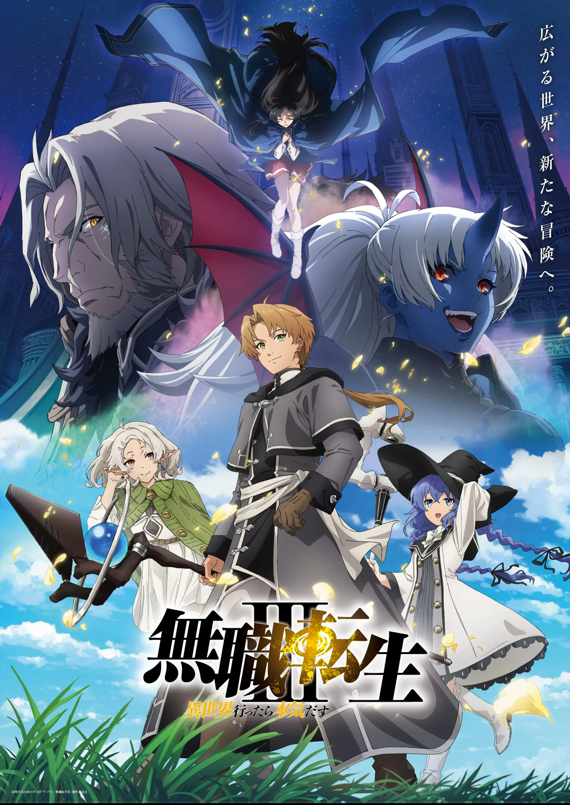
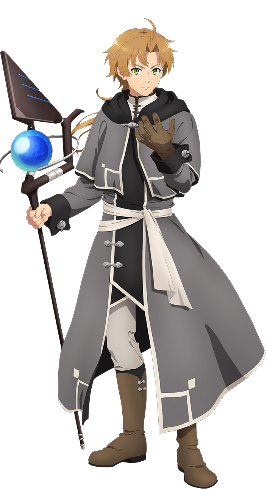
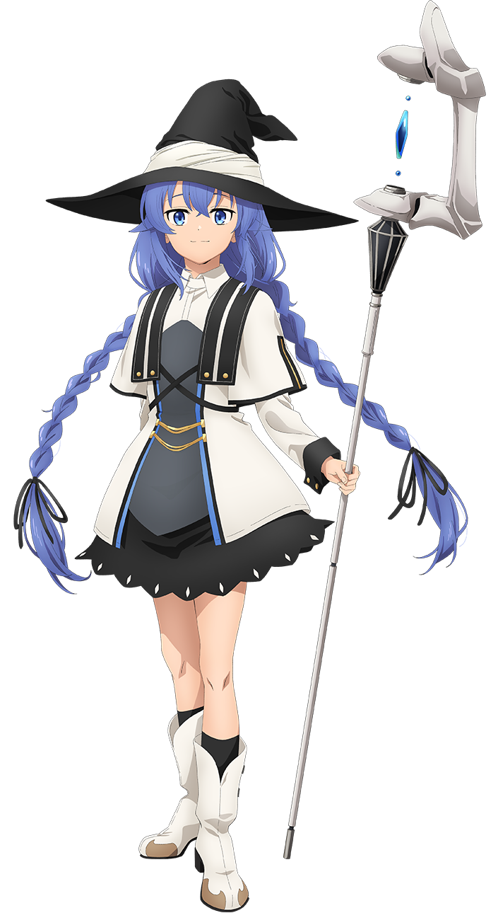
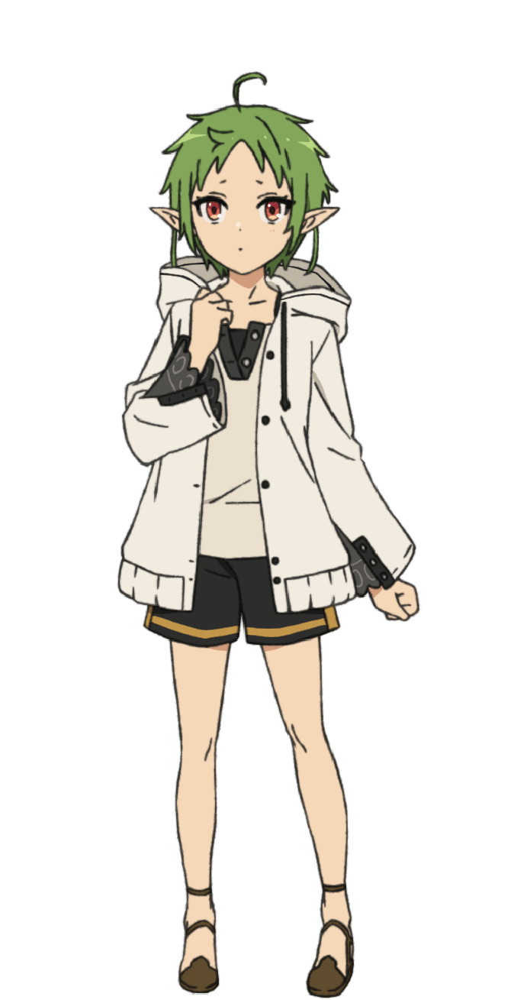
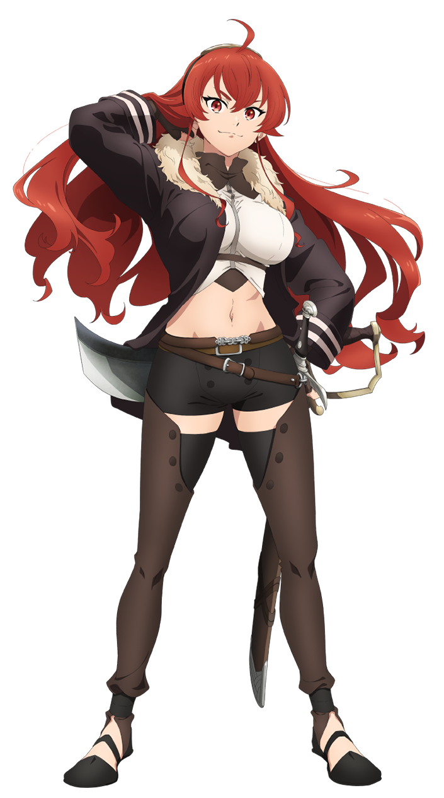

A 34-year-old man dies in a traffic accident and wakes up as a baby in a world of magic and swords. He remembers his whole old life, so this time he gets to start over. In Japanese the show is called 無職転生.

Mushoku Tensei began as a web novel written by Rifujin na Magonote in 2012. It became a light novel, then a manga, and in 2021 Studio Bind turned it into an anime. There are three seasons so far.
The main character is reborn as Rudeus Greyrat in a small farming village. He learns magic from a tutor, makes friends, and grows up over many years. The story moves much more slowly than most anime. It is less about fighting monsters and more about Rudeus learning from his own mistakes.

The main character. He is clever but makes a lot of mistakes.

Rudeus's first magic teacher. She is calm, patient and very powerful.

His childhood friend. He saves her from bullies and teaches her magic.

A wild noble's daughter who is very good with a sword and hates studying.
The magic looks beautiful. Spells glow with a cool blue light instead of exploding, so even a quiet scene is interesting to look at.
The story takes its time. Whole years go by between episodes, so you really get to watch the characters grow up.
Nobody is perfect. Even the adults make bad choices, which makes the good moments feel earned.
Mushoku Tensei (TV series) on Wikipedia
Key visual and character designs come from the official anime website. The pictures belong to Rifujin na Magonote, Shirotaka and the Mushoku Tensei Production Committee.